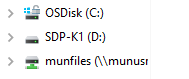

Installation
Install PyBMS
Before you can use PyBMS, you first need to install it. Here are the steps to do this:
Move the zip file (full version or customer version) somewhere NOT on your OneDrive. I can’t stress this enough. *DO NOT PUT IT ON YOUR ONEDRIVE!!!!!!!!!!* This also means you CAN’T put it in your documents. Put it somewhere on your C drive that is not synced by OneDrive (not my documents).
If you don’t have > Python 3.10 installed, download and install it: https://www.python.org/ftp/python/3.10.5/python-3.10.5-amd64.exe Older versions of python might not work
Unzip the zip folder containing pybms (NOT ON YOUR ONEDRIVE)
Look for a file called
install.batand double click it. It should open up a cmd. If the window close immediately, most likely you lack python. The see the error message, use cmd/powershell to open the script. During this step:The virtual environment is created (in the folder venv)
All the necessary packages are installed (this takes a long time, wait for the window to close)
You are now ready to go. However, it is recommended that you also install Pycharm CE. If you are experienced with python, you also run it in Spider/VSCode/terminal/Nano/VIM, but all the guides will assume you are using Pycharm. Here you can download Pycharm CE: https://www.jetbrains.com/pycharm/download/download-thanks.html?platform=windows&code=PCC
Flash SDP-K1
In this case it is assumed the drivers for SDP-K1 are already installed. If this is not the case, get them here: https://www.analog.com/en/design-center/evaluation-hardware-and-software/evaluation-boards-kits/sdp-k1.html#eb-relatedsoftware
If everything works well, you should see a drive called SDP-K1 (be aware, the SDP-K1 must be connect to the computer via USB). If this is not the case, most likely the drivers are not yet installed.
{kind=link}
If you do not have the bin file, you can get it from PyBMS GUI from my.analog.com It uses the same file.
Copy the bin file to the SDP-K1 drive. If everything works well, the window should automaticly close.
After 1 min, check if SDP-K1 drive is empty. In case it shows: FAIL, the process did not work.
You only have to do this once (or when an important update is required). If you are sending equipment to customers, it is recommended that you flash the SDP-K1 yourself. This save a lot of debug time.
Configure PyCharm
Before you can start, you have to tell PyCharm where it can find everything. This is how you setup the correct python interpreter in Pycharm:
Open the folder of the unzipped content of pybms (if this is located on your Onedrive, go back to beginning). Do not start a project. You should open the pybms folder in the pyBMS_vXYZ.
You’ll now see all the files. Check if you also see the folder venv\Scripts
Go to: File – Settings
Click on Project – Python interpreter
Click on the gear icon. You should now see the options: Add and Show All. Click on Add
Select existing environment, check if the path is: <your folder containing pybms>\venv\Scripts\python.exe
If this is not the case, click on the … ,navigate to<your folder containing pybms>\venv\Scripts\python.exe and press ok
Press ok to close Project Setting and press ok to close settings.
{kind=link}
{kind=link}
Congratulations, you are now ready to go (after PyCharm did some indexing. If you did all of this on OneDrive, this process will take very long (most likely more then one hour). Also, the overall performance will be very bad. This can result in error that are very hard to debug (because timeouts will be passed). So again, DO NOT INSTALL THIS ON ONEDRIVE.
It might take some time before PyCharm loads the configuration for the first time. Patients is key here. If PyCharm is scanning for binaries, you’ll have to wait